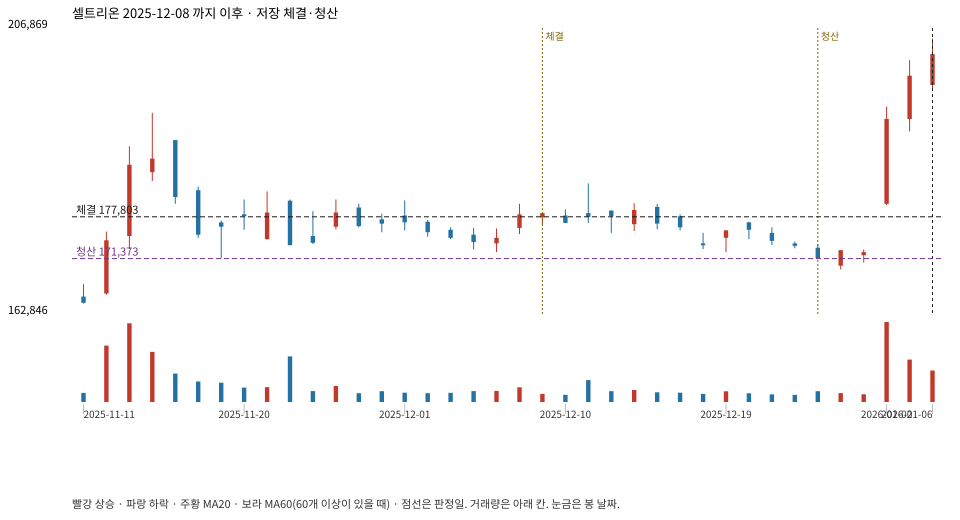

계좌를 다시 돌리지 않았다. 아래는 저장된 주문·체결·청산·비용·손익이다.

{
"case_id": "478adefb2d5ad6bb",
"status": "closed",
"trade": {
"symbol": "068270.KS",
"signal_date": "2025-12-08",
"quantity": 118,
"entry": 178190,
"stop": 171459,
"target": 193809,
"planned_risk": 845622.5469189936,
"reserved_cash": 21047446.419999998,
"fill": {
"date": "2025-12-09",
"price": 177803.13839062498,
"fee": 20980.77033009375
},
"exit": {
"date": "2025-12-26",
"price": 171373.2705,
"reason": "stop",
"net_pnl": -799927.2273428403,
"ambiguous_bar": false
}
},
"cost": "research fee 10bp each side, slippage 5bp; amounts below are the stored ledger, not a new run",
"chart": "c\/478adefb2d5ad6bb.svg"
}